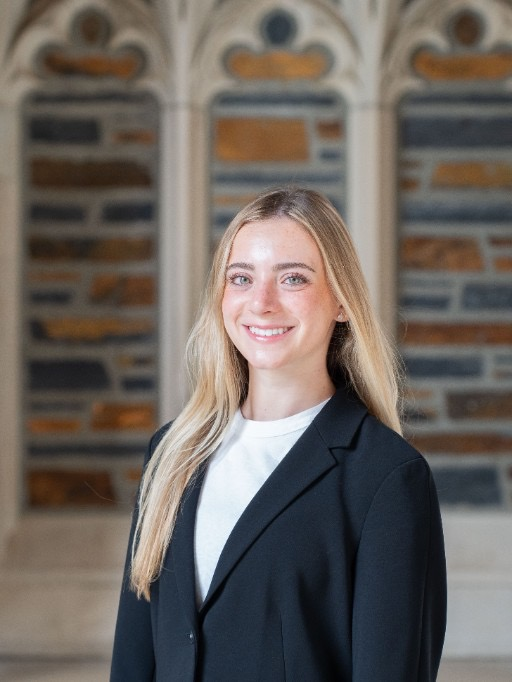

TanysMayman
Duke ’29 · Psychology · New York
I study how people work, then use that to inform decisions in fashion, retail, beauty, and consulting.
About
I am a Duke student in the Class of 2029, pursuing a B.S. in psychology with a minor in neuroscience and a certificate in innovation and entrepreneurship. I am interested in the intersection of psychology and business: how people think, choose, and respond, and how that should shape a decision. I want to bring that to fashion, retail, and beauty, and to consulting.
New York · Duke University ’29 · 3.93 GPA
Experience
-
I
Fashion audience
Built @tanysjhm, a fashion TikTok, to more than 180,000 followers through trend forecasting, styling, and consumer-facing content. I read engagement to see what people wanted, then used that to decide what to make next.
-
II
Cross-Cultural GPS Study
Lead undergraduate research assistant in Duke’s Mind and Culture Lab. The study examines how instructional approaches shape children’s independence across cultures. I find collaborators, support experimental design and piloting, collect data with human subjects, and keep recruitment and coding on track.
-
III
Investment research
Summer intern at G4 Capital Partners in New York. I researched more than ten placement agents and New York real estate trends, supported diligence on three commercial transactions from $30 million to $200 million, and wrote deal highlights for investors.
-
IV
Retail, up close
Selected as one of 30 new members, from more than 100 applicants, for Duke Business of Retail Society. I meet executives across retail, fashion, and consumer businesses and work on how preference, product, and operations fit together.
Path
- Class of 2029 B.S. Psychology, Duke University. Neuroscience minor and a certificate in innovation and entrepreneurship.
- Sept 2026 — now Member, Duke Business of Retail Society.
- July 2026 — now Lead research assistant, Duke Mind and Culture Lab.
- Summer 2026 Summer intern, G4 Capital Partners, New York.
- June 2026 — now Constellation Navigator. I mentor a cohort of 40 first-year Duke students and use their feedback to improve experiential learning.
- May — June 2026 External affairs intern, The Shefa School. Donor communications that contributed to retention above 70 percent, plus the annual report and events.
- Apr 2026 — now Director of Communications, Duke Business Behind Health. Newsletters for more than 400 members, and an incubator fellowship with Cancer Screening Advocates on mobile screening in Durham.
- 2020 — 2023 Fashion content creator, @tanysjhm.
Contact
Let’s talk.
I am open to internships and conversations in fashion, retail, beauty, and consulting.